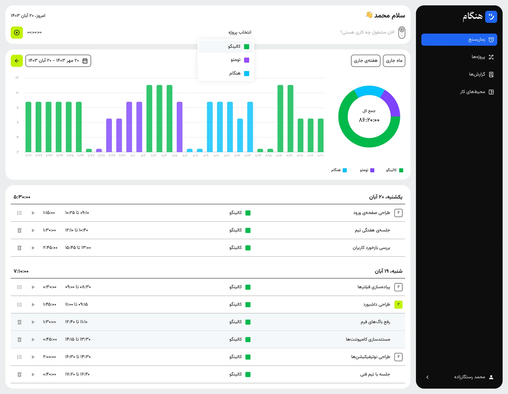
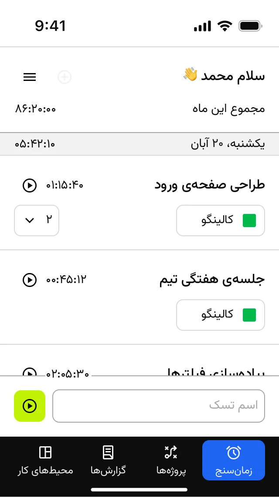
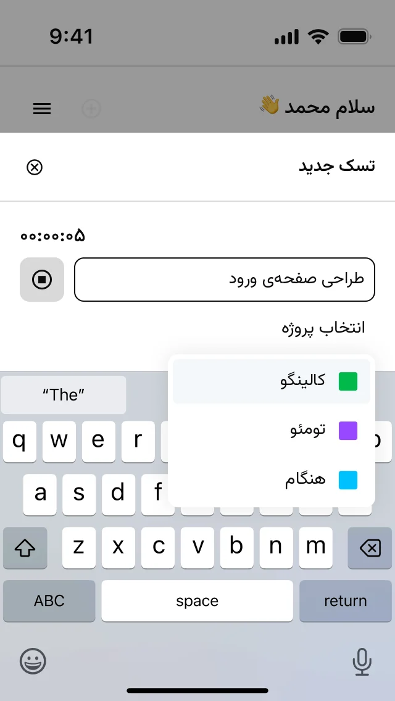
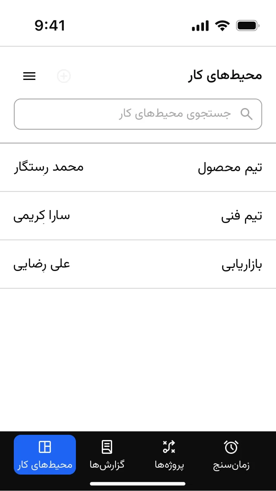

Hengam: time tracking for teams
Hengam is the time tracker we designed for our own team at Gandom. People start a timer on a task, tag it with a project and see where their week went. Managers set up workspaces and pull reports by project or teammate.
PlatformWeb and mobile
My roleUI design
ContextInternal tool at Gandom




